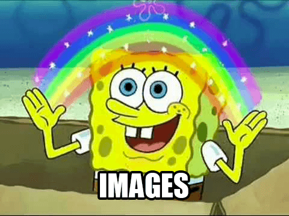

Digamos que você tem um produto, um portfólio ou apenas uma ideia que queira compartilhar com o mundo em seu próprio site. Antes de você publicar na internet, talvez queira torná-lo atrativo, profissional ou pelo menos com uma boa aparência.
Qual é a primeira coisa que você deve fazer?
Conteúdo
O propósito do design é melhorar a apresentação do conteúdo onde ele é aplicado. Pode parecer óbvio, mas o conteúdo é o principal elemento de um site e não deve ser deixado para se fazer depois.
Conteúdo escrito, como o parágrafo que você está lendo agora, faz parte de mais de 90% da Web. Estilizar este conteúdo de exemplo levará um certo tempo.
Vamos considerar que você já tenha finalizado o conteúdo que deseja publicar e apenas criou um arquivo style.css vazio, qual é a primeira regra que você pode escrever?
Centralização
Longas linhas de texto podem ser difíceis de serem analisadas e lidas. Definindo um limite de caracteres por linha aumenta a legibilidade e appeal of a wall of text.
body {
margin: 0 auto;
max-width: 50em;
}
Depois de estilizar os blocos de texto, que tal estilizar o próprio texto?
Font family
A fonte padrão dos navegadores é "Times", que pode parecer pouco atraente (principalmente porque é uma fonte "sem estilo"). Mudando para uma fonte sans-serif como "Helvetica" ou "Arial" pode melhorar drasticamente o visual da sua página.
body {
font-family: "Helvetica", "Arial", sans-serif;
}
Se você preferir uma fonte serif, tente "Georgia".
Na medida que isso torna o texto mais atraente, vamos deixá-lo mais legível.
Espaçamento
Quando uma página aparece "quebrada" ao usuário, normalmente é um problema de espaçamento. Adicionando um espaço ao redor e dentro de seu conteúdo pode aumentar a aparência de sua página.
body {
line-height: 1.5;
padding: 4em 1em;
}
h2 {
margin-top: 1em;
padding-top: 1em;
}
O layout tem melhorado muito até agora. Vamos realizar algumas pequenas mudanças.
Cor & contraste
Texto preto num fundo branco pode ser pesado para os olhos. Optando por um tom mais suave de preto para o corpo do texto torna a página mais confortável de ler.
body {
color: #555;
}
E para manter um nível decente de constraste, vamos escolher um tom mais escuro para palavras imporantes
h1,
h2,
strong {
color: #333;
}
Enquanto a maior parte da página melhorou visualmente, alguns elementos (como trechos de código) continuam fora do lugar.
Equilíbrio
Só é preciso alguns toques adicionais para corrigir o equilíbrio da página:
code,
pre {
background: #eee;
}
code {
padding: 2px 4px;
vertical-align: text-bottom;
}
pre {
padding: 1em;
}
Neste ponto, você pode querer fazer com que sua página se destaque e dar uma identidade.
Cor primária
Muitas marcas possuem uma cor primária que atua como um realce visual. Em um site, este realce pode ser usado para fornecer ênfase em elementos interativos, como links.
a {
color: #e81c4f;
}
Mas para manter o equilíbrio, precisaremos de algumas cores adicionais.
Cores secundárias
A cor de realce pode ser complementada com tons mais sutis, para ser usada em bordas, cor de fundo ou até mesmo no corpo do texto.
body {
color: #566b78;
}
code,
pre {
background: #f5f7f9;
border-bottom: 1px solid #d8dee9;
color: #a7adba;
}
pre {
border-left: 2px solid #69c;
}
Como mudamos os tons, por que não alterar as formas...
Fontes personalizadas
Já que o texto é o principal conteúdo de um site, usando uma fonte personalizada dá a página uma identidade mais perceptível.
Você pode incorporrar sua própria webfont ou usar serviços online como Typekit. Vamos usar "Roboto" do serviço gratuíto Google Fonts:
@import 'https://fonts.googleapis.com/css?family=Roboto:300,400,500';
body {
font-family: "Roboto", "Helvetica", "Arial", sans-serif;
}
Depois de melhorar sua identidade através de texto, vamos adicionar mais mil palavras...

Gráficos e ícones podem ser usados como ornamentos para dar suporte ao seu conteúdo ou fazer parte da mensagem que deseja transmitir.
Vamos melhorar nosso cabeçalho com uma bela imagem de fundo de Unsplash:
header {
background-color: #263d36;
background-image: url("header.jpg");
background-position: center top;
background-repeat: no-repeat;
background-size: cover;
line-height: 1.2;
padding: 10vw 2em;
text-align: center;
}
Vamos adicionar também um logo:
header img {
display: inline-block;
height: 120px;
vertical-align: top;
width: 120px;
}
Aproveitando, vamos melhorar os estilos do texto:
header h1 {
color: white;
font-size: 2.5em;
font-weight: 300;
}
header a {
border: 1px solid #e81c4f;
border-radius: 290486px;
color: white;
font-size: 0.6em;
letter-spacing: 0.2em;
padding: 1em 2em;
text-transform: uppercase;
text-decoration: none;
transition: none 200ms ease-out;
transition-property: color, background;
}
header a:hover {
background: #e81c4f;
color: white;
}
E voilà!
Nós desenvolvemos uma página em apenas alguns minutos, seguindo os princípios básicos de web design. Falta apenas uma última coisa para fazermos...